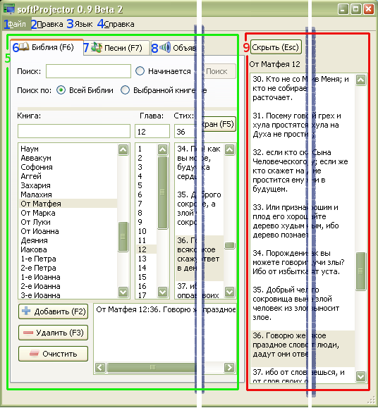

1.3 Обзор программы

Интерфейс программы состоит из двух главных частей: подготовительная и экранная.
В подготовительной части тексты выбираются и просматриваются перед выводом на экран.
1. Меню "Файл":
Содержит только одну опцию:  "Выход,"
выход из программы.
"Выход,"
выход из программы.
2. Меню "Правка":
Содержит опции редактирования песен, управления базой данных и общие настройки программы
-
2.1 "Новая песня"
В программе есть возможность добавления песен и сборников по усмотрению пользователя. Для этого имеется опция Новая песня .2.2 "Редактировать песню"
Редактируется выбранная на данный момент песня. Подробнее2.3 "Копировать песню"
Выбранная песня копируется в новый или существующий сборник. Подробнее2.4
 "Удалить песню"
"Удалить песню"
Выбранная песня удаляется из сборника. Подробнее2.5
 "Управление базой данных"
"Управление базой данных"
В программе предусмотрена возможность импортирования / экспортирования / редактирования и удаления Библий и песенников.2.6 "Настройки"
Изменение настроек программы. Настройки шрифтов, фона, Библий и других параметров программы.
-
3. Меню "Язык":
В программе предусмотрен выбор языка интерфейса. На данный момент доступны три языка: английский,
русский и немецкий. При переключении на другой язык не требуется перезапуск программы.
Программа запоминает язык интерфейса при закрытии .
4. Меню "Справка":
Здесь находится информация о программе и справочник.
5. Подготовительная часть интерфейса:
Перед выводом на экран, текст нужно выбрать и подготовить.
После выбора необходимого текста, он выводится на окно
Предварительного просмотра.
6.
 Закладка "Библия":
Закладка "Библия":
На этой закладке можно осуществлять быстрый поиск стиха, если неизвестно его местонахождение,
его просмотр и вывод на экран. Подробнее
7.
 Закладка "Песни":
Закладка "Песни":
Данная программа главным образом предназначена для вывода на экран песен.
На этой закладке песню можно легко найти и просмотреть. При необходимости, песни можно
редактировать, добавлять новые или удалять. Подробнее
8.
Закладка "Объявления":
Программа позволяет выводить на экран любой текст в любое время, по усмотрению пользователя.
Подробнее
9. Окно вывода на экран:
При нажатии на кнопку "На экран", вся подготовленная информация переводится в
"Окно вывода на экран ." Всякие изменения, сделанные в этом окне, будут отображаться
на экране немедленно.